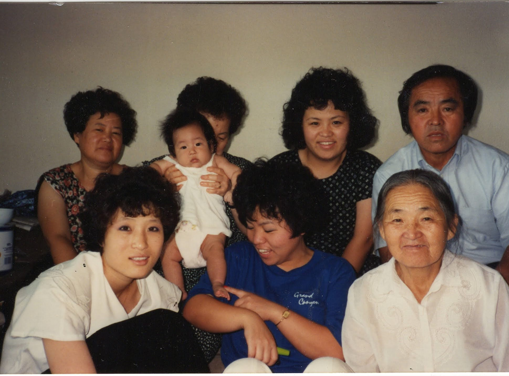
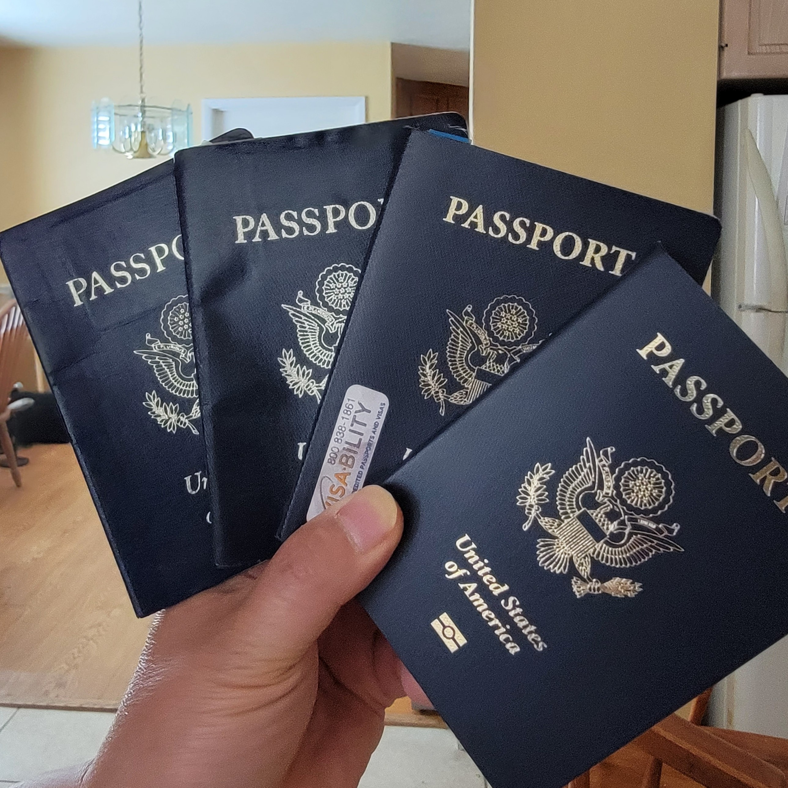

Received a new passport, issued by the United States Department of State.
It took twice as long to renew, about 10 weeks, roughly a monthly apartment rent, when I was a newly-wed back in the 1990s.
First Passport : Jul 1990 - Jul 2000
Hardly used the first.
From 1974 till 1990, I never traveled outside of the United States.
Then after marrying June, we went to Korea to report our marriage to June’s family. Her family traces her lineage back for nearly thousand years and they are majority owner in a village next to 현충사(顯忠祠)1
However, my side of the family, because most family members still live in North Korea, we can count on 2 hands, those that are directly related to us.
We had a wonderful month long visit to June’s hometown and her ancestral home.
I remember sleeping the main bedroom when we visited their old home. They graciously let us sleep in the most comfortable room and they slept in the guest room. I can still recall hearing the cicadas buzzing sound as we slept.
In addition, my family came to Korea to celebrate my dad’s 60th Birthday and my grandmother’s 80th Birthday.
Seeing all my families together, some I hadn’t seen in nearly 20 years, made me feel more homesick and I resolved that I would find a way to visit more often.

But my desires for international travel didn’t materialize for a long time.
Then it happened.
In 1997, a trip to Suzhou, China was arranged.
It was a trip to plan an equipment transfer from Sandy, Utah to Suzhou, China plant. This was the beginning and it opened many more opportunities.
The company was expanding into Asia and I met people who travel to overseas, assess potential business acquisition and formulate strategies to integrate those company.
I wanted to be part of it.
Then a year later, a VP of World Wide Manufacturing calls me into his office.
Would you interested in moving to Korea with your family and work on integrating Korean manufacturers into the world wide group?
I could have given my answer right then.
He suggested June and I traveled to Korea and see if this is something I wanted to do.
Then to bolster my confidence, he said as I left his office.
You are probably the only person on this earth capable of handling this role.
Starting in the fall of 1998, I was using the passport on a monthly basis. Sometimes weekly, since the Asian Pacific HQ was in Singapore.
By May of 2000, 2 months prior to expiration date, I ran out of pages on the passport.
2nd Passport - May 2000 - May 2010
Went to the United States Embassy in Seoul to renew the passport.
I was treated like a VIP and the passport was issued to me within hours.

This time the booklet was much thicker, anticipating more work related travels to China, HK, Singapore, Japan, and even Europe.
3rd Passport - Jun 2012 - June 2022
For nearly 5 years, from 2007 to 2012, there were no overseas travel.
However, to be ready, just in case, the passport was renewed.
Then a new role with a new company, I would travel to Japan several times a year.
This was not expected outcome but welcomed.
Appreciated and cherished the opportunity to travel to Asia again.
Renewed Appreciation

Upon receiving the new passport, looked up the cost of traveling to some favorite locations.
Prices were roughly twice as much from recent traveling years.
Accrued airline mileages could only take me to Continental US locations.
Far cry from times when not only renewal costs but vast majority of travels to Asian and European destinations were paid for by the employer.
I may not travel and use my new passport.
However, I opted for the thicker booklet (52 pages) rather than the standard 28 pages. Just in case…
My son once said that it is hard to claim knowledge or understanding of a country that you are visiting as a tourist or on business.
Nevertheless traveling even if for a few weeks or days it is still far better than not traveling at all.
I regret that I did not prepare myself before traveling those locations.
I may have gained far more understanding of the culture and history, had I tried.
So I will pay the necessary fees, prepare and wait on future opportunities to travel.
If not, then I will look back and reminisce about lessons learned and people I met, during past travels.
Footnotes
https://www.wikiwand.com/ko/%ED%98%84%EC%B6%A9%EC%82%AC↩︎